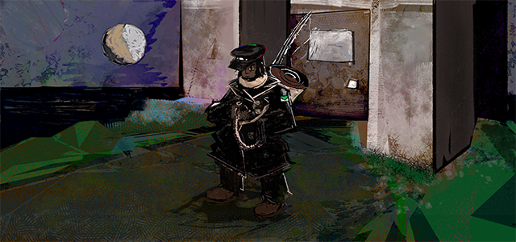
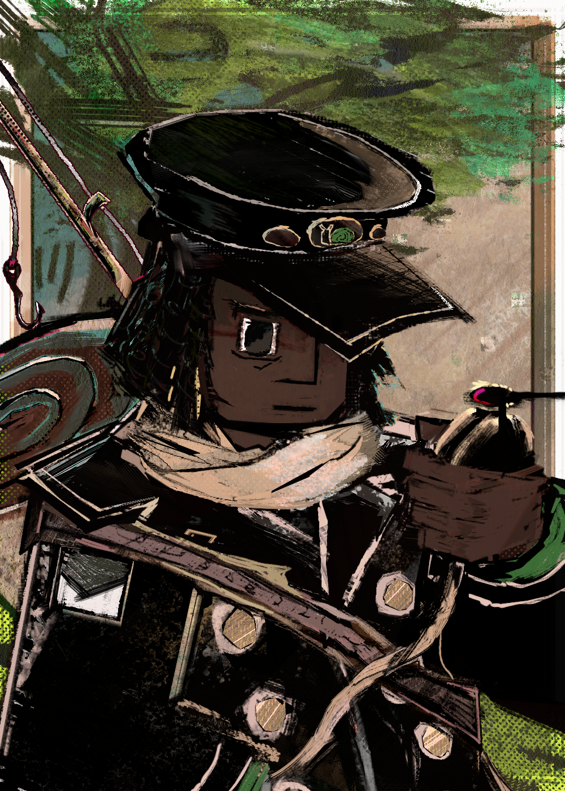

PC (abbreviated from Player Character) is the player's character that they control throughout Island Off Outer Darkness, their name being chosen by the player at the beginning of the game. They are an early-20's young adult in a Postman's residency under Lundquist the Postman that permanently resides on the island. They're fairly quiet, and to say more of their personality would be to spoil what is revealed via the video game. They are the point-of-view of the player, so... you're kinda forced to figure 'em out.

probably wanna open in another tab.')">Lambchopper's initial concept sketch of PC.
The initial major inspirations were Alm Fire Emblem and... I think brother Nier??? PC diverged very quickly after the initial concept, which had them having a rival on the island, and included a stint in the wilderness, which, spoilers, there's no wilderness on the Island Off Outer Darkness. Idk who to compare them to now, they're pretty realized, at least I hope.

Lambchopper's portrait of PC.